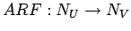
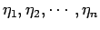
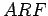
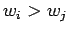
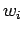
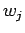
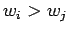
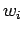
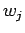

La máquina de Inferencia basada en Aritmátiica Difusa puede verse como una plicación
. En otras palabras, las entradas al bloque de Razonamiento Aproximado serán los conjuntos difusos
 y la salida será el número difuso  :
:
 es una Función de Razonamiento Aproximado cuyo objetivo es el de capturar el conocimiento que se tiene del sistema.
Por ejemplo, si se tiene un caso en el que el conocimiento disponible es de la forma:
Dicho conocimiento puede representarse por la siguiente ecuación
La ecuación (2.2) establece que la salida crece cuando se incrementa cualquiera de las entradas  . Además, si  entonces el efecto de variar  es mayor que el de variar , O lo que es igual, la entrada es más importante que la entrada .
. Además, si  entonces el efecto de variar  es mayor que el de variar , O lo que es igual, la entrada es más importante que la entrada .
Podemos construir la ecuación (2.1) empleando funciones aritméticas crisp y empleando el principio de extensión; estas funciones crisp las denominamos  .
.